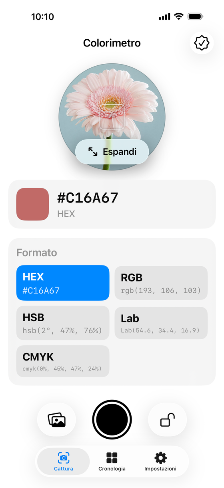
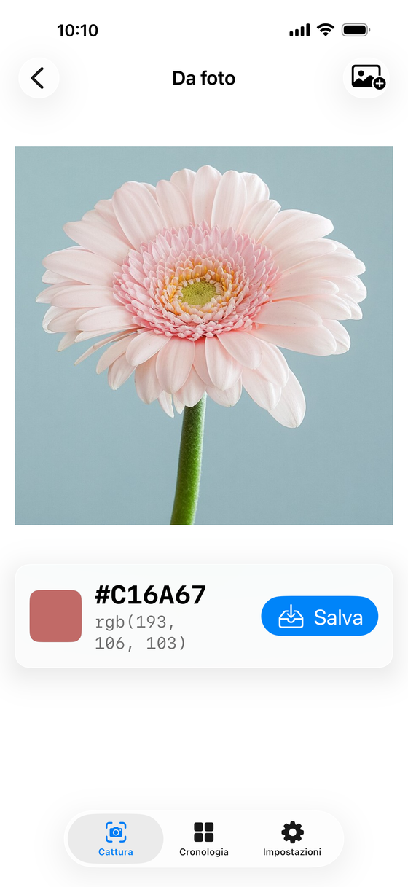
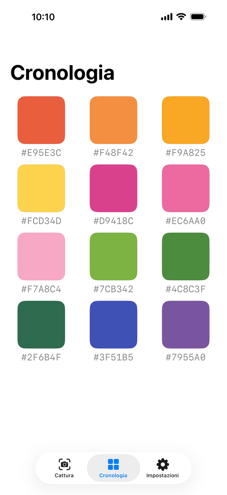

Inquadra una parete, un tessuto, un fiore — e leggi il suo colore in tempo reale in HEX, RGB, HSB, Lab e CMYK. Calibrato come uno strumento professionale, semplice come una fotocamera.
Gratis. Niente banner, niente abbonamenti, niente raccolta dati — mai.
La vista umana "corregge" continuamente ciò che vedi. È per questo che il campione di vernice non corrisponde mai alla parete, e la foto non corrisponde mai al tessuto.
Lo stesso oggetto è caldo al tramonto, freddo sotto i LED, verdastro sotto i neon. Qual è il colore "vero"?
Ridipingere una parete, riordinare un tessuto, ristampare un lotto: ogni colore sbagliato diventa tempo e materiale buttati.
La fotocamera del tuo iPhone più la vera scienza del colore: misura invece di indovinare, e porta il numero con te.
Tutto avviene dal vivo, sul dispositivo, nei formati che designer e maker usano davvero.
Inquadra qualsiasi cosa e guarda la lettura aggiornarsi in tempo reale. Blocca il valore quando è quello giusto, catturalo con un tocco.


Apri un'immagine dalla libreria e tocca un punto per leggerne il colore esatto. Perfetto per moodboard, riferimenti e foto scattate sul posto.
Ogni colore finisce in una cronologia visuale pulita con il suo codice HEX — copia, condividi o ritrovalo quando vuoi, su tutti i tuoi dispositivi via iCloud.

La luce ambiente inganna qualsiasi fotocamera. La modalità Accurata rimedia con lo stesso metodo usato in fotografia e in stampa.
Inquadra una comune reference card grigia. Riflettendo tutte le lunghezze d'onda allo stesso modo, rivela il "bianco" reale della luce della scena.
Un adattamento cromatico in spazio LMS — la stessa trasformazione della gestione colore ICC — corregge ogni lettura verso D65 o D50.
Le acquisizioni calibrate salvano valori Lab affidabili. E dove un sensore da telefono non può arrivare (finiture metallizzate, iridescenti), l'app lo dice.
Sei l'utente, non il prodotto. Colorimetro non ha pubblicità, tracciamento, analytics né account: i tuoi colori vivono sul tuo dispositivo e nel tuo iCloud privato, dove noi non possiamo vederli.
Gratis sull'App Store. Tra trenta secondi saprai il colore della prima cosa che inquadri.
Scarica suApp Store